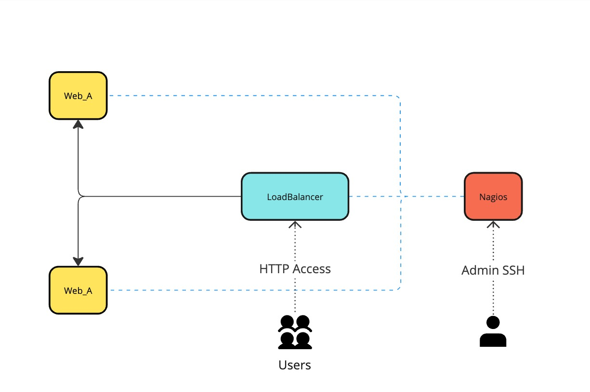

Welcome to Infrastructure Documentation
This documentation provides an in-depth look at our project's infrastructure design and implementation. It details my thought process, design decisions, and problem-solving approaches. Whether you're a developer, network architect, or end-user, you'll gain insights into how this system evolved, including:
- sources used
- challenges overcome
- lessons learned along the way
High-Level Design
Here's an overview of the infrastructure:

Infrastructure Design
Technology Used
- Flask/Python
-
Flask, a lightweight Python web framework, enables rapid development of scalable web applications.
-
Docker simplifies containerization, ensuring consistent environments across development and production.
-
HAProxy, a reliable open-source load balancer, optimizes traffic distribution and enhances scalability.
- Nagios offers powerful monitoring capabilities, ensuring system health and uptime with detailed alerts.
Documentation Overview
This documentation includes the following sections:
- Project Overview: (This page) High-level overview of the system and its architecture.
- About: Background and additional details about the project.
Get Started
To dive deeper, visit the Getting Started section or explore About.
Visit the Github Repo